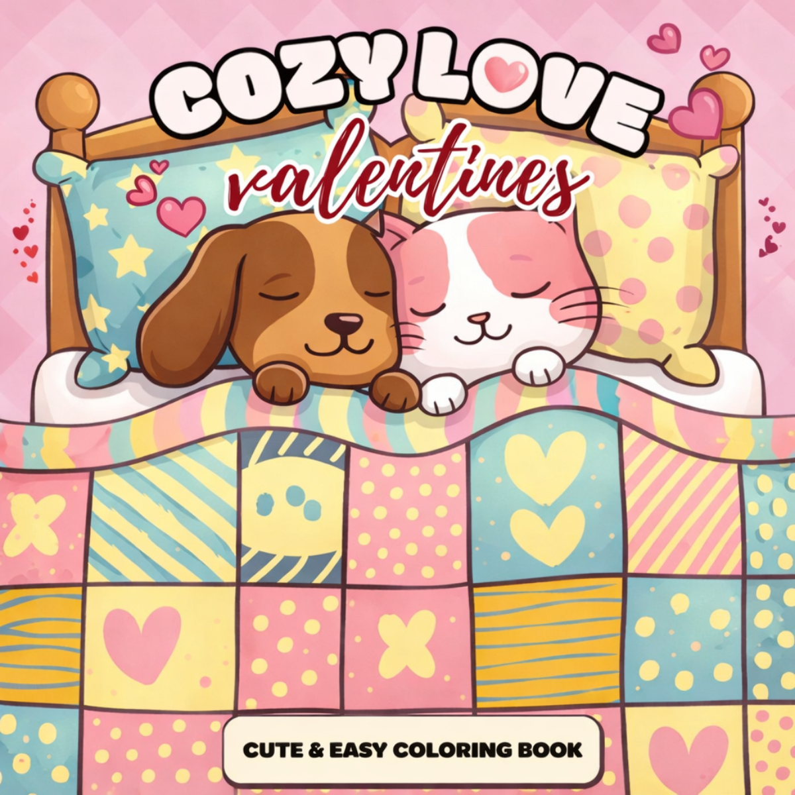

Sweet couple scenes
Holding hands, warm conversations, and cute moments full of affection and calm energy.
A warm romantic collection filled with heart-themed scenes, sweet couples, and dreamy cozy spaces.

From coffee dates and flower bouquets to candle-lit evenings, this book celebrates soft romance and emotional comfort. The illustrations are calming and designed to help you slow down and enjoy gentle coloring time.
Best for: gift ideas, couples, and cozy-coloring fans who love Valentine themes.
Holding hands, warm conversations, and cute moments full of affection and calm energy.
Candles, blankets, flowers, and little heart motifs to build a romantic atmosphere.
Beautiful spreads that can be framed, shared, or added to personal memory albums.